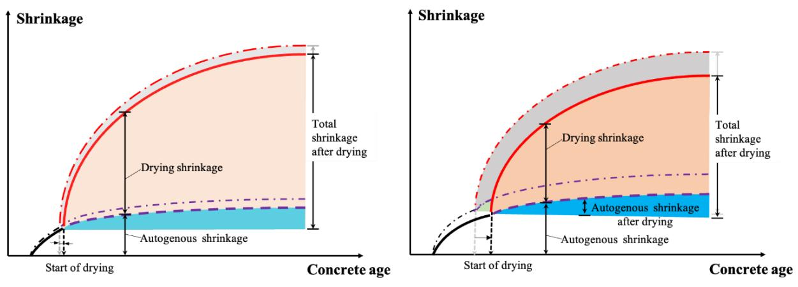

Chemical Admixtures for Concrete
Chemical admixtures are auxiliary ingredients added in small quantities to fresh concrete to modify its fresh-state rheology and hardened-state performance without altering the fundamental composition of cement, water, and aggregates. These specialized additives function by interacting with the physicochemical properties of the cement paste, such as modifying surface tension, neutralizing particle charges to improve dispersion, or influencing hydration kinetics to control setting time and strength development [1] [2] [3]. By altering parameters like viscosity, water demand, and air content, admixtures enable the achievement of specific performance targets including enhanced workability, reduced permeability, improved durability against environmental attacks, and controlled shrinkage [4] [5] [6] [7]. The effectiveness of any admixture depends on its chemical formulation, solubility, and compatibility with the specific cementitious system, requiring careful selection to ensure desired fresh-state behavior while preserving long-term structural integrity [3] [8].
This overview of Chemical Admixtures for Concrete from CP Tech Center reports also covers the following subtopics: Air Entraining Agent and Cement-Admixture Compatibility.
Chemical Admixtures for Concrete covers specialized additives that modify material behavior through targeted physicochemical mechanisms rather than structural contribution. Air Entraining Agent modifies concrete properties by introducing microscopic bubbles that enhance freeze-thaw durability without serving as a primary binding agent. Cement-Admixture Compatibility governs the physicochemical interactions between hydraulic cement and chemical additives that determine whether a concrete mix achieves its intended fresh-state workability and hardened-state durability without adverse effects.
Sources (20)
Sub-concepts (2)
Key findings
- Demonstrated that chemical admixture effectiveness is governed more by system-wide factors—such as mixing procedure, mixer type, and charge method—than by any single additive [9].
- Revealed a fundamental trade-off between mechanical strength and hydraulic performance in pervious concrete, where additives that raise compressive strength simultaneously lower permeability [10].
- Showed that air-entraining agents provide the dominant mechanism for freeze-thaw durability, whereas non-air-entrained mixes require exceptionally low permeability and high strength to achieve comparable resistance [11].
- Identified that premature stiffening (false set) in certain cements can be mitigated by incorporating fly ash, which behaves like a low-range water reducer [9].
- Established that conventional admixture dosages cannot be directly transferred to roller-compacted concrete due to its low water-to-binder ratio limiting paste availability for chemical interaction [1].
- Found that two-stage mixing yields modest strength gains but compromises air entrainment by preventing fine particles from trapping bubbles, thereby increasing the air-void spacing factor [12].
- Demonstrated that high-range water reducers effectively mitigate compatibility problems in complex ternary mixes, eliminating early-age strength retardation when applied at recommended dosages [6].
- Observed that secondary ettringite deposits frequently filled entrained voids in field pavements, undermining the protective air-void system and durability despite adequate admixture use [3].
System Compatibility and Performance Trade-offs
Evidence: 19 reports (17 primary)
Chemical admixtures are auxiliary ingredients added in small quantities to modify fresh-state rheology and hardened-state performance without altering the fundamental composition of cement, water, and aggregates [1] [5] [3] [6] [7]. Their effectiveness relies on specific physicochemical interactions with cementitious materials, such as adsorption onto particle surfaces or modification of hydration kinetics, which determine the resulting workability and durability [2] [3] [13]. Because these interactions are sensitive to the specific chemistry of the cement system, achieving desired performance requires careful selection and dosage to balance fresh-state properties with long-term strength and resistance to deterioration [3] [8].
The following figure illustrates the key factors that influence the compatibility between cement and chemical admixtures.
 Factors affecting cement-chemical admixture compatibility [1]
Factors affecting cement-chemical admixture compatibility [1]
The figure displays a central red circle labeled “Parameters affecting the compatibility” surrounded by six colored boxes pointing inward. These surrounding factors include chemical and phase compositions of cement, cement fineness, dosage during grinding, mixing energy, degree of sulphonation, and the chemical nature of the admixture itself. This diagram illustrates the complex physicochemical interactions between additives and binders that determine whether a system achieves desired performance levels.
Research problem — Engineers lack reliable data on how supplementary cementitious materials interact with chemical admixtures, leading to unpredictable workability, setting times, and air-void stability that jeopardize construction schedules and long-term durability [5]. The industry faces a critical trade-off between achieving rapid early strength for quick traffic reopening and avoiding the durability penalties, such as cracking or reduced service life, associated with high dosages of accelerating admixtures [14]. There is no practical, standardized method to detect incompatibilities among admixtures and cementitious ingredients that disturb early-age hydration, forcing reliance on costly trial batching or resulting in erratic set behavior and thermal cracking [15].
The following figure illustrates how variations in cement type and temperature directly influence these critical set time parameters.
 Effect of cement type and temperature on set times [15]
Effect of cement type and temperature on set times [15]
The figure displays a bar chart comparing the final set time across three different cement types (labeled III, I, and ISM) at four distinct temperatures. For each cement type, the bars show that as temperature decreases from 40 C to 10 C, the final set time increases significantly. This data illustrates how environmental conditions and material composition influence hydration kinetics, which is a primary mechanism by which chemical admixtures function to control setting time.
State of the art — Modern practice treats chemical admixtures as an integrated system that must satisfy competing objectives such as workability, strength, permeability, and freeze-thaw durability through coordinated mix design [11]. The prevailing approach balances trade-offs among water reduction, cohesion, retardation, and air content using multi-criteria selection matrices and performance-based specifications rather than isolated additive technologies [1] [6]. Current industry standards emphasize the use of high-range polycarboxylate water reducers to mitigate compatibility problems in complex ternary cementitious systems while precise dosing guided by ASTM C 494 and compatibility tests serves as a standard design constraint [6].
The following figure illustrates the relative properties of P-19 admixed concrete mixtures.
 Relative properties of P-19 admixed concrete mixtures at various dosages. [1]
Relative properties of P-19 admixed concrete mixtures at various dosages. [1]
The figure displays a multi-panel plot showing how the relative workability index, relative cohesion, water reduction (WR), and compressive strength change as the dosage of an admixture increases from 0 to approximately 0.7%. The data illustrates that while strength initially increases primarily due to water reduction, it eventually decreases at higher dosages, demonstrating the complex interaction between admixture dosage and hardened-state performance.
Findings from the reports
- Demonstrated that chemical admixtures are essential for balancing competing performance demands in ternary cementitious systems, but their efficacy is highly sensitive to the specific chemistry of supplementary cementitious materials (SCMs) and base cements [16] [6] [8].
- Revealed that polycarboxylate-based high-range water reducers effectively mitigate early-age strength retardation and compatibility issues in complex ternary blends, whereas low-range reducers often cause rapid set incompatibility with Class C fly ash [16] [6] [8].
- Showed that air-entraining agents provide the dominant mechanism for freeze-thaw durability in low-permeability concrete, consistently achieving durability factors above 85% when spacing factors are controlled, though this comes at the cost of modest compressive strength loss [11] [10].
- Identified that air-void system quality is governed by admixture type and cement chemistry, with polymeric agents producing finer bubbles and lower spacing factors than resin-based agents, thereby enhancing deicer-scaling resistance [17] [3].
- Established that mixing efficiency and procedure critically determine admixture performance, with multi-step mixing improving microstructure but requiring careful control to avoid aggregate breakdown and air loss from overmixing [9] [12].
- Revealed a fundamental trade-off in pervious concrete where additives that increase mechanical strength (such as sand or latex) simultaneously reduce permeability by lowering void ratios, requiring coordinated admixture packages to balance hydraulic and structural needs [10] [18].
- Found that water-reducing agents only improve fresh-state workability once the paste volume exceeds a critical threshold relative to aggregate void space; beyond this point, additional binder degrades durability by increasing permeability without significantly boosting strength [2].
- Demonstrated that photocatalytic cement admixtures achieve measurable pollutant removal in controlled conditions but exhibit high sensitivity to environmental variables and surface fouling, limiting consistent real-world performance [19].
- Showed that isothermal calorimetry reliably detects admixture-induced incompatibilities and predicts early-age set times and strength development, enabling proactive quality control for complex mix designs [15].
- Confirmed that conventional admixture dosages are insufficient for roller-compacted concrete due to low paste volumes, necessitating higher or adjusted dosage levels to balance cohesion, segregation risk, and compactibility [1].
Novelty & rigor — Research has shifted from isolated admixture evaluations to integrated, performance-based frameworks that systematically map the trade-offs between fresh-state workability and hardened-state durability across complex ternary cementitious systems [6]. Novel methodologies now employ quantitative indices derived from calorimetry and gyratory compaction to predict early-age strength, setting behavior, and placeability, thereby replacing subjective assessments with reproducible metrics for compatibility analysis [1] [4] [15]. The field is advancing through the development of holistic mix-design strategies that treat admixture selection as a coordinated system, utilizing multi-stage mixing protocols and real-time monitoring to resolve conflicts between competing performance requirements such as permeability, strength, and freeze-thaw resistance [12] [16] [10].
Reported values
| Parameter | Value | Context | Source |
|---|---|---|---|
| air entrainment | 11% | using air-entraining agents (AEA) | [1] |
| water reduction | 0-21% | corresponding water reductions | [1] |
| air content | 6% or greater% | required for F-T durability (measured with ASTM C231) | [11] |
| compressive strength | 10 percent | at 28 days for two-stage mixing process | [12] |
| correlation coefficient (R²) | 0.95 | prediction of mortar set time and early-age strength | [15] |
| paste-to-voids ratio | 1.25 to 1.5 times | minimum workability requirement | [2] |
| slump | 100-150 mm | mixes using Glenium® 7700 polycarboxylate based high range water reducer | [17] |
| air content range | 3.5 percent to 9.0 percent% | field tested mixtures | [16] |
| curing temperature | 50°F | cold weather concrete curing | [5] |
| permeability final value | 252 inches/hour | mix No. 4-RG-S7-L10 (latex and sand used) | [10] |
| air system adequacy failure rate | 39% | cores based on bubble spacing factor | [3] |
| R-squared | 0.651 to 0.756 | linear models for cement chemistry variables | [6] |
| cement content reduction | 24% | use of slag and addition of coarse aggregates | [7] |
| admixture mass fraction | <1% | total mass of the concrete | [8] |
| final flow spread | 176 mm | Mix 0.32-G20 after 60 min rest, when printing/extrusion was completed | [13] |
61 more distinct values omitted here; the full span-verified set is in the quantities sidecar.
Across the reviewed reports, chemical admixtures in concrete are fundamentally constrained by a system-wide trade-off where performance gains in one domain—such as strength or permeability—are consistently offset by compromises in another, such as durability or workability. This inverse relationship is evident across diverse applications: air-entraining agents enhance freeze-thaw resilience but reduce compressive strength and increase porosity, while viscosity modifiers improve shape stability in self-consolidating or printed concrete at the expense of flowability. Furthermore, compatibility issues with supplementary cementitious materials and base cements frequently exacerbate these trade-offs, as specific admixture-SCM interactions can cause unpredictable setting times or require complex multi-step mixing protocols to mitigate adverse effects. [11] [9] [10] [6] [7] [19]
The following figure illustrates how these various admixtures influence the balance between flowability and green strength in fresh concrete.
 Effect of mineral and chemical admixtures on flowability and green strength of fresh concrete with small-sized aggregates [7]
Effect of mineral and chemical admixtures on flowability and green strength of fresh concrete with small-sized aggregates [7]
The figure plots Green Strength against Flow Ratio to demonstrate the trade-off between workability and shape stability in self-forming concrete mixes. Arrows indicate that adding viscosity modifying agents increases green strength while decreasing flow ratio, whereas increasing cement and water content has the opposite effect on these parameters.
Implications — Designers must treat admixture selection as a systemic optimization problem that balances competing fresh- and hardened-state properties, rather than applying isolated additives to meet single performance criteria [6] [13]. Specifications should shift toward performance-based limits for durability and workability, requiring rigorous trial batching to verify compatibility between specific cement sources, supplementary materials, and admixture chemistries before field deployment [16] [5] [8]. Construction practice must integrate precise control of mixing sequences, timing, and energy with real-time monitoring to manage the trade-offs between admixture efficacy, aggregate integrity, and air-void quality [9] [12] [3].
The following figure illustrates how variations in mixing methodology directly influence the workability of fresh concrete.
 Effects of mixing method on the slump of fresh concrete [12]
Effects of mixing method on the slump of fresh concrete [12]
The data indicates that the effectiveness of the mixing method on workability varies significantly depending on the composition of the cementitious system, particularly regarding the inclusion of supplementary materials like fly ash and slag.
Limitations — Laboratory findings often fail to translate directly to field performance due to uncontrolled variables, climatic differences, and the inability of standard test methods to capture real-world durability mechanisms [11] [17] [6]. Performance outcomes are highly sensitive to specific material compatibilities, such as interactions between cementitious materials and admixtures, which can lead to unpredictable fresh-state behavior or durability issues [12] [3] [8]. Optimizing mix designs involves significant trade-offs between workability, strength, and cost, while current testing protocols often lack the standardization or sensitivity required to reliably predict field-wide adoption [9] [7] [13].
Internal Curing Technologies
Evidence: 1 report (1 primary)
Internal curing technologies address the need for sustained moisture supply within concrete to promote complete cement hydration and mitigate shrinkage-induced cracking. Synthetic polymeric agents, such as superabsorbent polymers, function by absorbing significant volumes of water during mixing and gradually releasing it into the surrounding paste as internal drying occurs [20]. The performance of these materials depends on their three-dimensional cross-linked molecular structure, which governs both their water absorption capacity and the kinetics of moisture release to the cementitious matrix [20].
The impact of these internal curing mechanisms on long-term dimensional stability is illustrated in the following figure.

Drying shrinkage and autogenous versus concrete age in conventional concrete (left) and high-performance concrete (right) after internal curing [20]The figure displays two graphs plotting cumulative shrinkage against concrete age, distinguishing between autogenous shrinkage and drying shrinkage. In the right graph representing high-performance concrete, a gray shaded region indicates additional shrinkage occurring after the start of drying compared to conventional concrete.
State of the art — Superabsorbent polymers are established as a mature internal-curing technology that enables ultra-low water-to-cement ratios by supplying stored water to sustain hydration and mitigate shrinkage [20]. Industry standards such as EN 206, ACI 305R, and ASTM C1761 provide guidelines for selecting SAP characteristics to balance moisture release against the potential early-age strength reduction caused by additional porosity [20]. Current practice recognizes SAP-based internal curing as a key adjunct to superplasticizers in high-performance concrete, requiring careful mix-design adjustments to manage workability and mitigate modest early-strength losses [20].
Findings from the reports
- Superabsorbent polymers (SAPs) markedly increased the degree of hydration and reduced early-age shrinkage while incurring modest penalties in compressive strength and electrical resistivity [20].
- The report identified an optimal SAP dosage of approximately 0.18% by cement mass to supply sufficient internal water for curing without excessive strength loss [20].
- Pre-wetted SAP improved fresh-state workability but caused early slump loss as the polymer absorbed mix water, whereas dry SAP reduced workability and delayed setting [20].
- Dry SAP provided more uniform particle distribution and less detrimental impact on compressive strength compared to pre-soaked SAP, which further reduced strength and raised water uptake [20].
- The internal-curing action of SAPs accelerated cement hydration, raising bound-water content and hydration heat as confirmed by calorimetry and thermogravimetric analysis [20].
Novelty & rigor — The research introduces a systematic, data-driven framework that treats superabsorbent polymers as engineered internal-curing agents to replace traditional lightweight aggregate reservoirs [20]. It establishes a novel specification methodology by defining explicit selection criteria based on particle size and absorption kinetics, enabling the calculation of optimal dosages that are significantly lower than those required for presaturated aggregates [20]. The approach demonstrates distinct reproducibility through a standardized dry-batching protocol that ensures uniform dispersion while mitigating the performance losses associated with conventional presoaking methods [20].
The following figure illustrates the absorption behavior of these polymers within cement pore solution.
 Absorption of various SAPs in cement pore solution [20]
Absorption of various SAPs in cement pore solution [20]
The figure plots the absorption kinetics of several different superabsorbent polymers (SAPs) over a period of time when exposed to cement pore solution. Different polymer formulations exhibit distinct behaviors, with some reaching peak absorption rapidly before desorbing and others maintaining stable uptake levels throughout the test duration.
Reported values
| Parameter | Value | Context | Source |
|---|---|---|---|
| compressive strength reduction | about 8% | at 28 and 56 days compared to the control mixture | [20] |
| SAP dosage | 0.18% | of the cement mass | [20] |
| SAP dosage | 1.5 g SAP per 864 g of cement | internal curing water quantity | [20] |
Implications — Practitioners must carefully balance the durability benefits of internal curing against potential reductions in early-age strength and workability by optimizing superabsorbent polymer selection, dosage, and introduction method [20]. Widespread adoption requires standardized specifications and predictive models to manage trade-offs between shrinkage reduction and mechanical performance, as current variability in material behavior limits consistent implementation [20].
The following figure illustrates the restrained shrinkage behavior of concrete mixtures that results from these material interactions.
 Restrained shrinkage of concrete mixtures [20]
Restrained shrinkage of concrete mixtures [20]
The figure plots the strain in a steel ring over time for four different concrete mixtures, including a control and three admixtures. The data shows that specimens containing SAP demonstrated lower strain levels than the control specimens.
Limitations — The continuous absorption and release of water by super-absorbent polymers after mixing makes it difficult to maintain a stable water-to-cement ratio, leading to unpredictable slump loss [20]. Uncontrolled moisture exchange and the presence of swollen particles can result in reduced mechanical properties and increased permeability at later ages [20]. There is currently no standard guidance for the sequence of adding presoaked super-absorbent polymer particles, leaving mix designers without reliable protocols for consistent application [20].
The following figure illustrates how these moisture exchange dynamics impact concrete workability by comparing the slump performance of different SAP types.
 Effects of SAP on the slump of concrete for (a) SAP-a and (b) SAP-b, where Sa-0 is dry and Sa-10 is pre-absorbed (particle size: SAP-a > SAP-b) [20]
Effects of SAP on the slump of concrete for (a) SAP-a and (b) SAP-b, where Sa-0 is dry and Sa-10 is pre-absorbed (particle size: SAP-a > SAP-b) [20]
The figure plots the slump of fresh concrete against three mix conditions: a control (PC), a mixture with dry super-absorbent polymer (Sa-0), and one with pre-absorbed polymer (Sa-10). Three distinct admixture dosages are compared, showing that the addition of dry SAP significantly reduces slump while pre-absorption restores or increases workability.
Related concepts
In this hierarchy
- Parent: Cementitious Materials & Chemistry
- Child: Air Entraining Agent
- Child: Cement-Admixture Compatibility
Related by shared evidence
- Cement Hydration — shares 18 reports
- Supplementary Cementitious Materials — shares 18 reports
- CP Tech Center Reports — shares 17 reports
- Air Entraining Agent — shares 16 reports
- Concrete Curing — shares 16 reports
- Fly Ash — shares 16 reports
- Concrete Materials & Mixtures — shares 15 reports
- Freeze-Thaw Durability — shares 15 reports
Similar topics
- Cement-Admixture Compatibility
- Workability of Concrete
- Supplementary Cementitious Materials
- Cement Hydration
- Air Entraining Agent
- Concrete Curing
- Concrete Materials & Mixtures
- Performance-Based Mix Design
References
- C. V. Hazaree, H. Ceylan, P. Taylor, K. Gopalakrishnan, K. Wang, and F. Bektas, "Use of Chemical Admixtures in Roller-Compacted Concrete for Pavements," National Concrete Pavement Technology Center, Ames, IA, 2013. [Online]. Available: https://www.intrans.iastate.edu/wp-content/uploads/2018/03/rcc_admixture_w_cvr1.pdf
- P. Taylor, F. Bektas, E. Yurdakul, and H. Ceylan, "Optimizing Cementitious Content in Concrete Mixtures for Required Performance," National Concrete Pavement Technology Center, Ames, IA, 2012. [Online]. Available: https://www.intrans.iastate.edu/wp-content/uploads/2018/03/taylor_ocm_w_cvr2.pdf
- J. Grove, F. Bektas, and H. Gieselman, "Southeast Michigan Local Road Concrete Pavement Durability Study," National Concrete Pavement Technology Center, Ames, IA, 2006. [Online]. Available: https://www.cptechcenter.org/wp-content/uploads/2018/03/mi_pavement_durability.pdf
- K. Wang, Z. Ge, J. Grove, J. M. Ruiz, and R. Rasmussen, "Developing a Simple and Rapid Test for Monitoring the Heat Evolution of Concrete Mixtures (Phase 3)," CTRE, Iowa State University, Ames, IA, Rep. FHWA Project 17 (Phase I), 2006. [Online]. Available: https://www.intrans.iastate.edu/wp-content/uploads/2018/03/CalorimeterReportPhaseIII.pdf
- K. Wang and Z. Ge, "Evaluating Properties of Blended Cements for Concrete Pavements," Department of Civil, Construction and Environmental Engineering, Iowa State University, Ames, IA, 2003. [Online]. Available: https://www.intrans.iastate.edu/wp-content/uploads/2018/03/blended_cements-1.pdf
- P. Tikalsky, V. Schaefer, K. Wang, B. Scheetz, T. Rupnow, A. St. Clair, M. Siddiqi, and S. Marquez, "Development of Performance Properties of Ternary Mixes, Phase 1," Center for Transportation Research and Education, Ames, IA, Rep. TPF-5(117), 2007. [Online]. Available: https://www.intrans.iastate.edu/research/completed/development-of-performance-properties-of-ternary-mixes-phase-1/
- K. Wang, S. P. Shah, J. Grove, P. Taylor, P. Wiegand, B. Steffes, G. Lomboy, Z. Quanji, L. Gang, and N. Tregger, "Self-Consolidating Concrete—Applications for Slip-Form Paving: Phase II," National Concrete Pavement Technology Center, Ames, IA, Rep. TPF-5(098), 2011. [Online]. Available: https://www.intrans.iastate.edu/wp-content/uploads/2018/03/SCC_Phase_2_final_report-edited_wcover.pdf
- P. Tikalsky, P. Taylor, S. Hanson, and P. Ghosh, "Development of Performance Properties of Ternary Mixtures: Laboratory Study on Concrete," National Concrete Pavement Technology Center, Ames, IA, Rep. TPF-5(117), 2011. [Online]. Available: https://www.intrans.iastate.edu/research/completed/development-of-performance-properties-of-ternary-mixtures-laboratory-study-on-concrete/
- S. Schlorholtz, K. Wang, J. Hu, and S. Zhang, "Materials and Mix Optimization Procedures for PCC Pavements," CTRE, Iowa State University, Ames, IA, Rep. TR-484, 2006. [Online]. Available: https://www.intrans.iastate.edu/wp-content/uploads/2018/03/mco-final.pdf
- V. R. Schaefer, K. Wang, M. T. Suleiman, and J. T. Kevern, "Mix Design Development for Pervious Concrete in Cold Weather Climates," CTRE, Iowa State University, Ames, IA, 2006. [Online]. Available: https://www.perviouspavement.org/downloads/Iowa.pdf
- K. Wang, G. Lomboy, and R. Steffes, "Investigation into Freezing-Thawing Durability of Low-Permeability Concrete with and without Air Entraining Agent," National Concrete Pavement Technology Center, Ames, IA, 2009. [Online]. Available: https://www.intrans.iastate.edu/wp-content/uploads/2018/03/low-permeability-concrete.pdf
- T. D. Rupnow, V. R. Schaefer, K. Wang, and B. L. Hermanson, "Improving PCC Mix Consistency and Production Rate through Two-Stage Mixing," Center for Transportation Research and Education, Ames, IA, Rep. TR-505, 2007. [Online]. Available: https://www.intrans.iastate.edu/wp-content/uploads/2018/03/two-stage-mix-1.pdf
- K. Wang, K. Wi, S. Laflamme, S. Sritharan, P. Taylor, and H. Qin, "Feasibility Study of 3D Printing of Concrete for Transportation Infrastructure," Institute for Transportation, Iowa State University, Ames, IA, Rep. TR-756, 2020. [Online]. Available: https://intrans.iastate.edu/app/uploads/2020/10/concrete_transportation_infrastructure_3D_printing_feasibility_w_cvr.pdf
- G. Fick and D. Harrington, "Concrete Overlay Field Application Program, Final Report: Volume I," National Concrete Pavement Technology Center, Ames, IA, 2012. [Online]. Available: https://apps.itd.idaho.gov/apps/manuals/Materials/Materials%20References/OverlayFieldAppFinalReport.pdf
- K. Wang, Z. Ge, J. Grove, J. M. Ruiz, R. Rasmussen, and T. Ferragut, "Simple and Rapid Test for Monitoring the Heat Evolution of Concrete Mixtures, Phase 2," Center for Transportation Research and Education, Ames, IA, 2007. [Online]. Available: https://www.intrans.iastate.edu/wp-content/uploads/2018/03/calorimeter.pdf
- P. Taylor, P. Tikalsky, K. Wang, G. Fick, and X. Wang, "Development of Performance Properties of Ternary Mixtures: Field Demonstrations and Project Summary," National Concrete Pavement Technology Center, Ames, IA, Rep. TPF-5(117), 2012. [Online]. Available: https://www.intrans.iastate.edu/wp-content/uploads/2018/03/ternary_final_w_cvr.pdf
- R. D. Hooton and D. Vassilev, "Deicer Scaling Resistance of Concrete Mixtures Containing Slag Cement, Phase 2," National Concrete Pavement Technology Center, Ames, IA, Rep. TPF-5(100), 2012. [Online]. Available: https://www.intrans.iastate.edu/research/completed/deicer-scaling-resistance-of-concrete-pavements-bridge-decks-and-other-structures-containing-slag-cement-phase-2-evaluation-of-different-laboratory-scaling-test-methods/
- V. R. Schaefer and J. T. Kevern, "An Integrated Study of Pervious Concrete Mixture Design for Wearing Course Applications," National Concrete Pavement Technology Center, Ames, IA, 2011. [Online]. Available: https://www.intrans.iastate.edu/wp-content/uploads/2018/03/pervious_overlay_report_w_cvr.pdf
- T. Cackler, J. Alleman, J. Kevern, and J. Sikkema, "Technology Demonstrations Project: Environmental Impact Benefits with "TX Active" Concrete Pavement (Missouri DOT Two-Lift Demonstration)," National Concrete Pavement Technology Center, Ames, IA, 2012. [Online]. Available: https://www.cptechcenter.org/research/completed/technology-demonstrations-project-environmental-impact-benefits-with-tx-active-concrete-pavement-in-missouri-dot-two-lift-highway-construction-demonstration/
- B. Zhou, P. Taylor, and K. Wang, "Superabsorbent Polymer in Concrete to Improve Durability," National Concrete Pavement Technology Center, Iowa State University, Ames, IA, Rep. TR-793, 2025. [Online]. Available: https://www.intrans.iastate.edu/wp-content/uploads/2025/04/superabsorbent_polymer_in_concrete_w_cvr.pdf
Feedback on this page